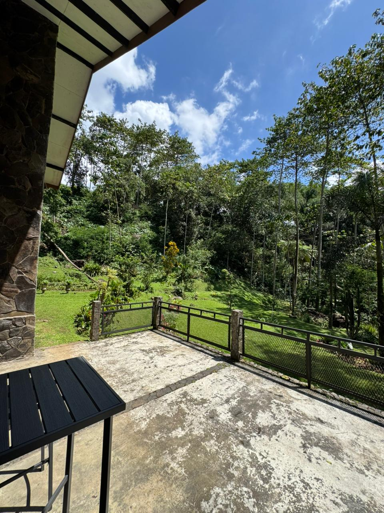
Private riverside villa in Puncak
Your private riverside escape in Puncak.
Cool air. Long meals. The river nearby. A 3-bedroom private villa for families and close groups who want Puncak to feel calm, warm, and easy.
A slower kind of weekend
Gather by the river, stay close to nature.
Riverside Garden Villa is made for simple, memorable stays: slow breakfasts, long meals around the dining table, cool evenings in the living room, and quiet mornings with the sound of the river outside.
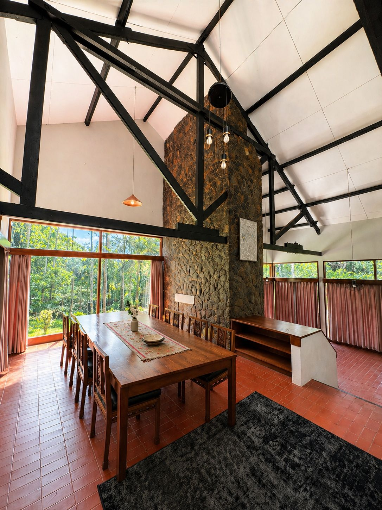
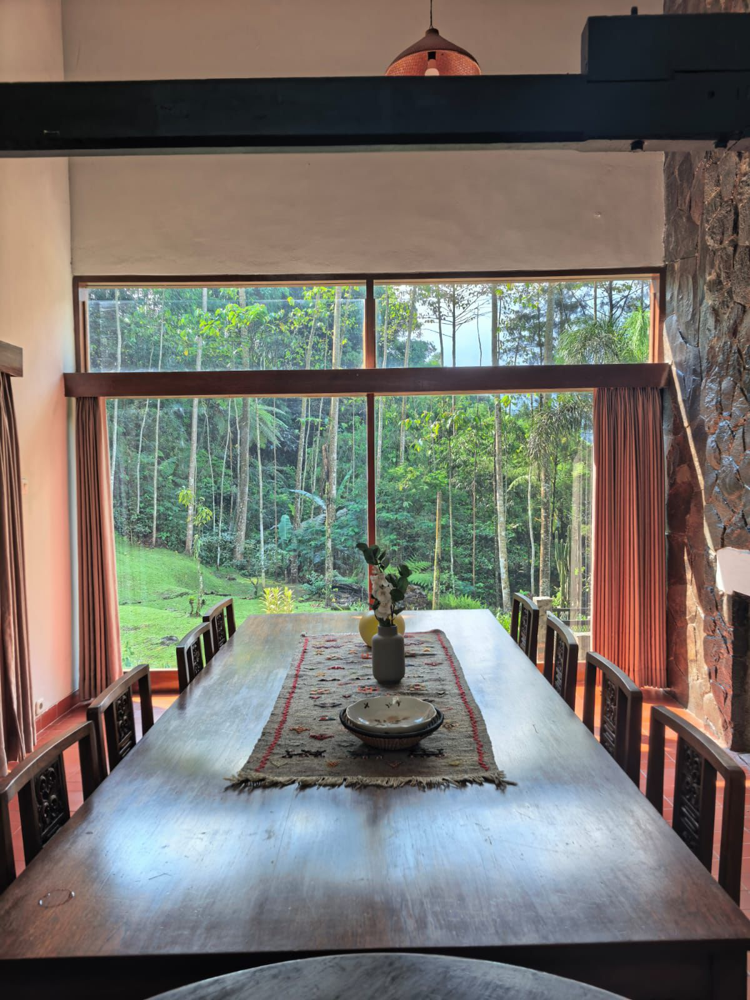
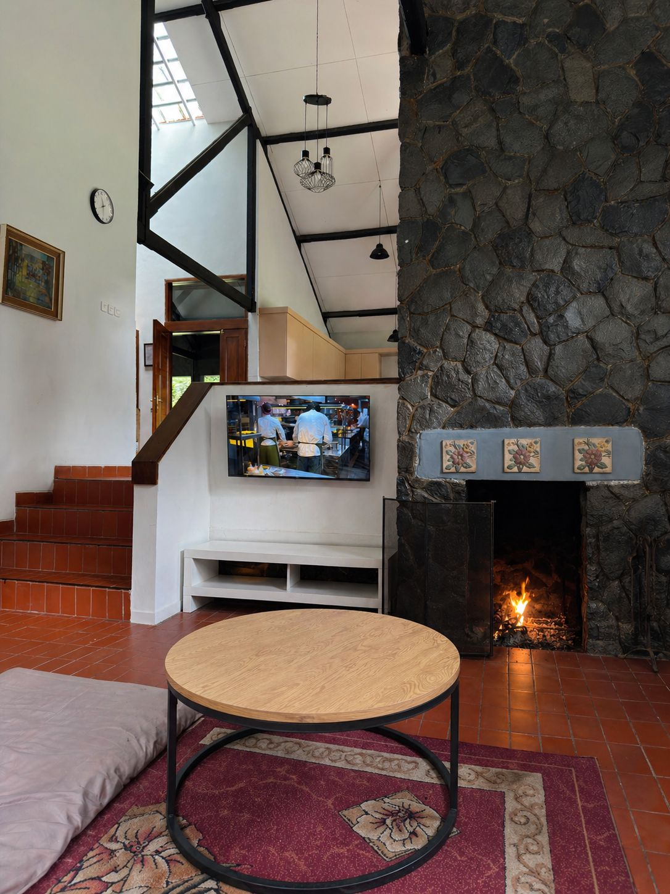
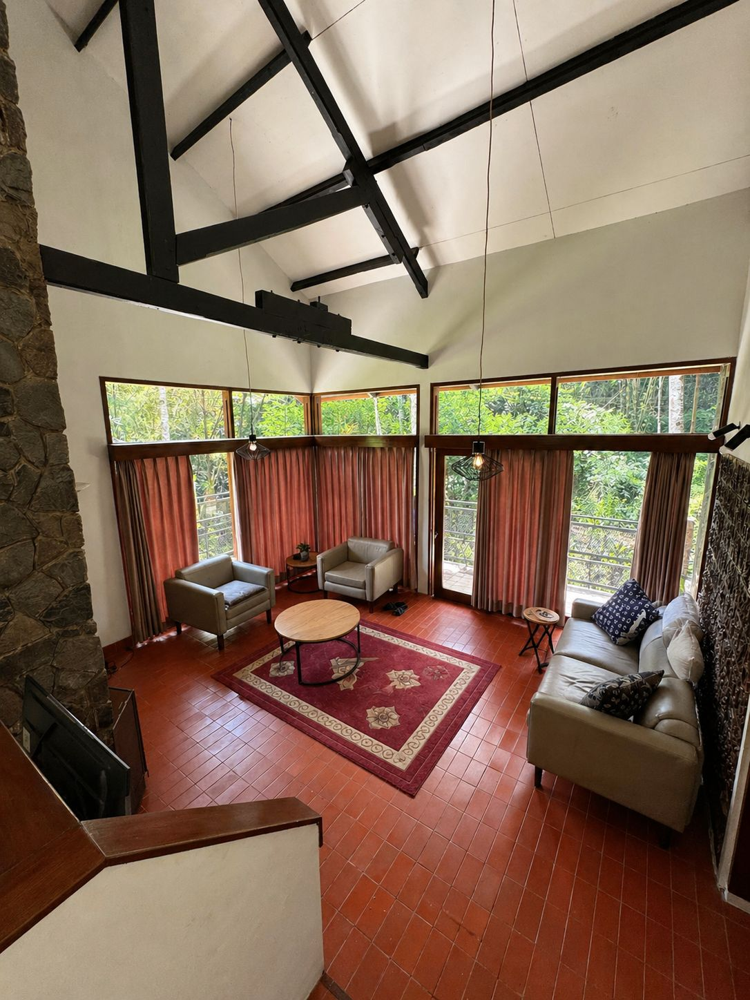
Living & dining
Cool air. Long meals. Everyone together.
The villa centers around warm shared spaces: a large dining table, cozy living area, high ceilings, natural stone textures, and garden views from the windows.
- Large dining table for group meals
- Cozy living room with stone fireplace feature
- Kitchen and fridge for easy family stays
Bedrooms
Three calm rooms after the day outside.
Simple, clean bedrooms with warm wood, terracotta floors, and soft bedding — comfortable without trying too hard to feel like a hotel.
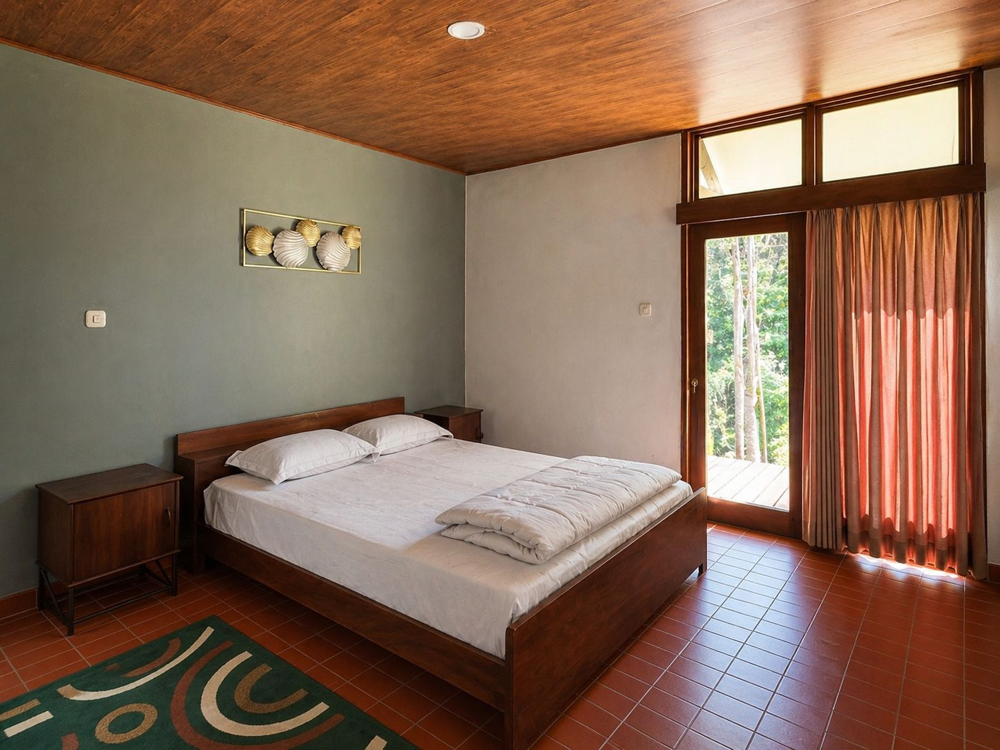
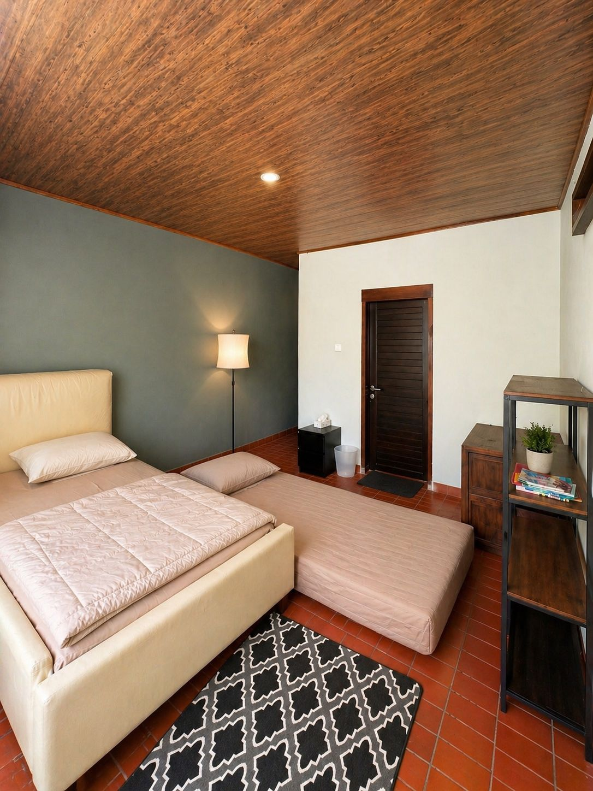
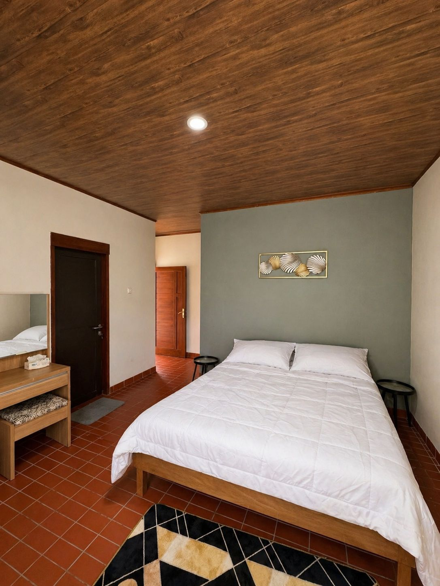
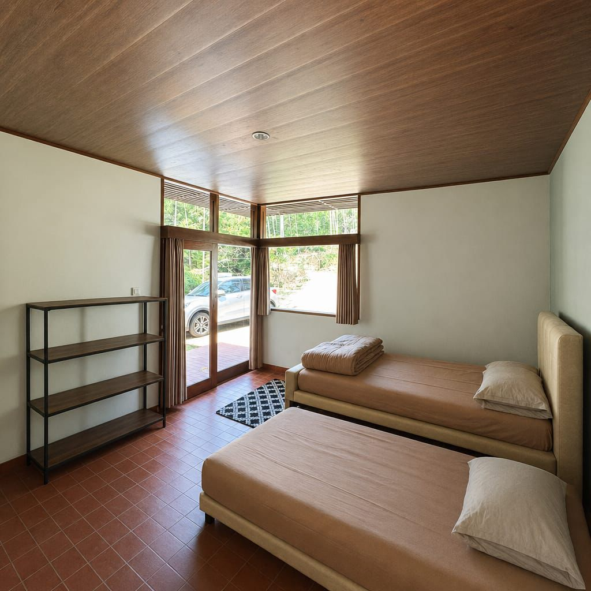
Gallery preview
Arrive, gather, rest, step outside.
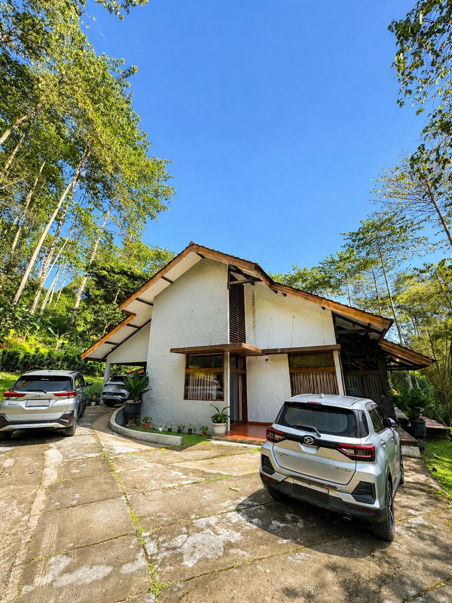

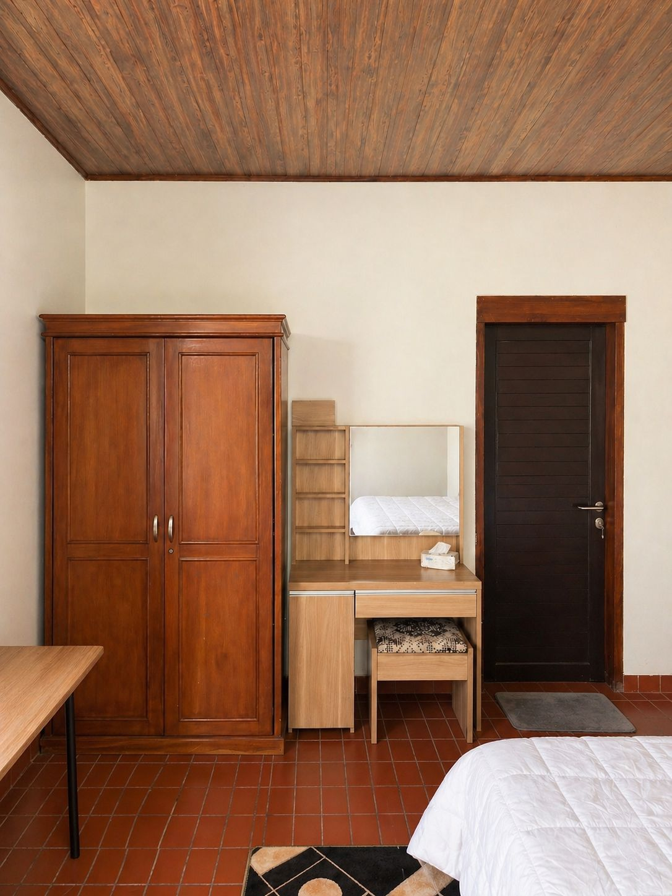
Riverside garden villa in Puncak
Cool air, green views, and a private garden setting.
For guests searching for a private villa in Puncak with a garden, riverside atmosphere, and comfortable space for family or friends, Riverside Garden Villa brings nature close without losing the comforts that make a stay easy.
Amenities
Everything needed for an easy group stay.
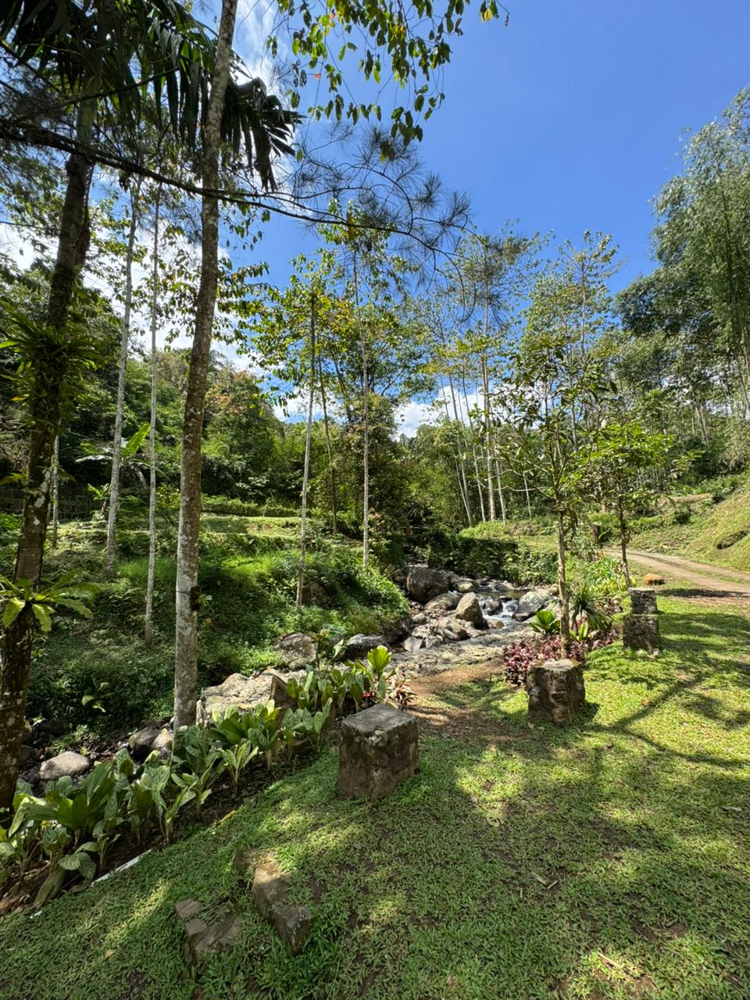
Patio & GardenOutdoor space facing greenery and the river.FAQ
Quick answers before booking.
How many bedrooms does Riverside Garden Villa have?
The villa has 3 bedrooms, suitable for families and close groups.
Is the villa good for families?
Yes. The villa is designed around shared spaces: a cozy living room, large dining table, kitchen, patio, and garden.
Is there WiFi and a kitchen?
Yes, the villa includes WiFi, a kitchen, and a fridge.
What makes the location special?
The villa is in Puncak with cool mountain air, a private garden feel, and a riverside natural setting.
Booking inquiry
Plan your riverside stay in Puncak.
Send your dates, number of guests, and any questions. We’ll help you check availability and plan the stay. Follow us on Instagram at @riversidegardenvilla.